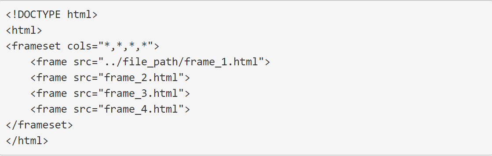
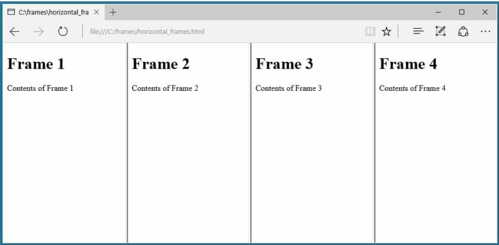
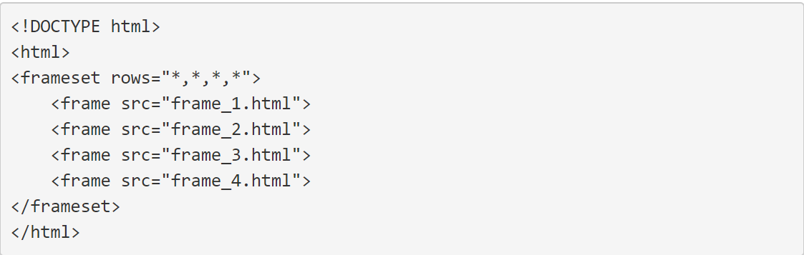
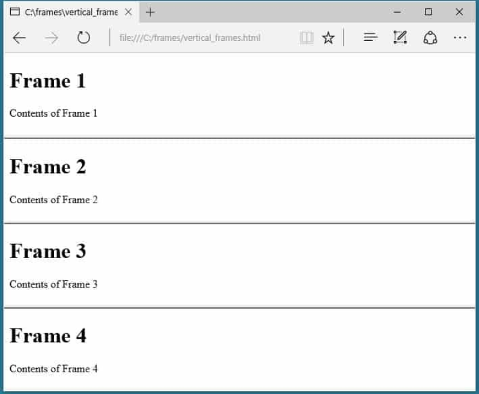
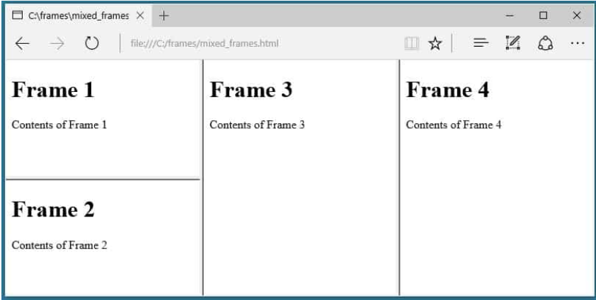
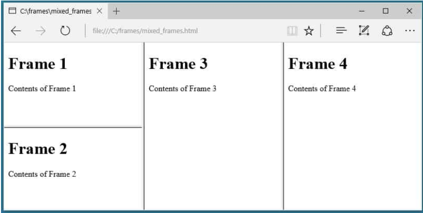
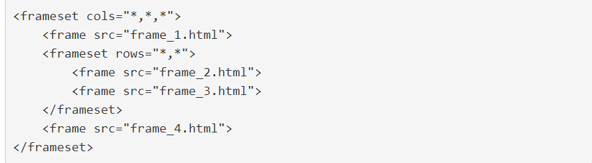
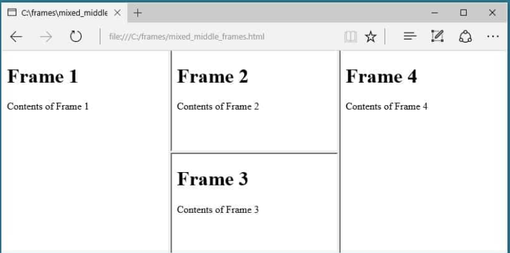

FRAMES
HTML frameset Tag.
Lots of modern websites have sticky navigation menus that are visible either in the page sidebar or at the top of the page as you scroll up and down the page. However, the CSS features that make sticky navigation possible haven't always been supported by web browsers. Before this effect could be created with CSS, the HTML frameset and frame elements were used to create page layouts in which certain content remained visible while other content was scrollable.
The Difference Between Frames and Iframes
When you use frameset you split the visual real estate of a browser window into multiple frames. Each frame has it's own
contents and the content in one don't spill into the next. An iframe, on the other hand, embeds a frame
directly inline with the other elements of a webpage. While both frames and iframes perform a similar
function – embedding a resource into a webpage – they are fundamentally different.
• Frames are layout-defining elements.
• Iframes are a content-adding elements.
The Basic Idea Behind Frames
The basic concept behind frames is pretty simple:
• Use the frameset element in place of the body element in an HTML document.
• Use the frame element to create frames for the content of the web page.
• Use the src attribute to identify the resource that should be loaded inside each frame.
• Create a different file with the contents for each frame.
Let's look at a few examples of how this works. First we need a few HTML documents to work with. Let's
create four different HTML documents. Here's what the first will contain:
Creating Vertical Columns
To create a set of four vertical columns, we need to use the frameset element with the cols attribute. The cols attribute is used to define the number and size of columns the frameset will contain. In our case, we have four files to display, so we need four frames. To create four frames we need to assign four comma-separated values to the cols attribute. To make things simple we're going to assign the value * to each of the frames, this will cause them to be automatically sized to fill the available space. Here's what our HTML markup looks like.
 
Creating Horizontal Rows
Rows of frames can be created by using the rows attribute rather than the cols attribute as shown in the HTML below.
By making that one change, the frames now load as four rows stacked up on top of each other.

Mixing Columns and Rows
Columns and rows of frames can both appear on the same webpage by nesting one frameset inside of another. To do this, we first create a frameset and then nest a child frameset within the parent element. Here's an example of how we could nest two rows within a set of three columns.
 

The nested frameset takes the place of the first frame within the parent element. The nested element can be placed in any position. For example, if we wanted the nested element to appear in the center position we would just rearrange the elements like this.
 Of course, we can also create additional nested frames if we want to.
Targeting Frames with Links
One of the most common uses of frames is to build sticky navigation into a frame that is always visible regardless of the position of the contents of the other frames. When properly implemented, navigation links will cause new resources to load in one frame while the other frames remain static. Anchors can be formatted to target specific frames by assigning a name attribute to a targeted frame element, and using the target attributed within the a element to load the href in the targeted frame. If all of that is a little confusing, let's take it step-by-step. The first step in making this happen is to assign a name to the frame where we want links to open. Using the layout we created just a minute ago, we would probably want to use the left-hand column for our navigation and the center column as our targeted frame. In order to do this, we need to assign a name to our target.
Styling-Formatting the Frameset
There are a few things you can do to affect the presentation of a frameset beyond styling the documents themselves.
-The size of each frame can be specified and locked.
-The margin between frames can be changed.
-The border around frames can be formatted.
-These changes aren't made with CSS. Instead, they are made by adding attributes and values to the frame
elements.
Sizing Frames
Frames can be sized either in pixels or percentages, or they can be set to automatically adjust in size based on the available space. To specify the size of a frame, insert the desired value in the cols or rows attribute.
By default, unless the attribute noresize is added to a frame, website visitors can use their mouse to drag the border between two frames to resize the frames. If this is undesirable, the attribute noresize can be applied to a frame element to prevent resizing.
Let's put both of these ideas into practice.
Targeting Frames with Links
One of the most common uses of frames is to build sticky navigation into a frame that is always visible regardless of the
position of the contents of the other frames. When properly implemented, navigation links will cause
new resources to load in one frame while the other frames remain
Anchors can be formatted to target specific frames by assigning a name attribute to a targeted frame
element, and using the target attributed within the a element to load the href in the targeted frame.
If all of that is a little confusing, let's take it step-by-step.
The first step in making this happen is to assign a name to the frame where we want links to open. Using
the layout we created just a minute ago, we would probably want to use the left-hand column for our navigation
and the center column as our targeted frame. In order to do this, we need to assign a name to our target.
Now that we've named the center column name="mid_col" we can create a couple of links in our left-hand column source document frame_2.html and target the center column.

Now when we load our webpage we have four navigation links in the left sidebar, and when we click a link
the contents of that file are loaded in the middle column frame with the attribute name="mid_col"
When we load our page here's what we initially see.

If we forgot to add the target="mid_col" attribute to one of the links, when we clicked the link the resource will load in the same frame that contained the link. If we want to reload the entire page, such as when linking to an external website, we need to add the target="_blank" or target="_top" attribute to the anchor element.